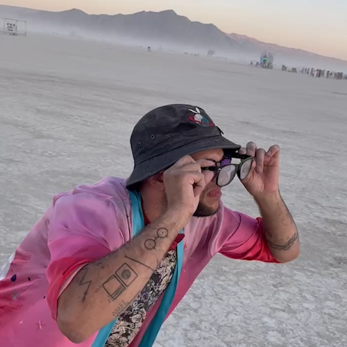
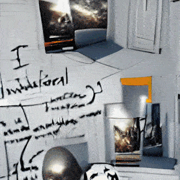
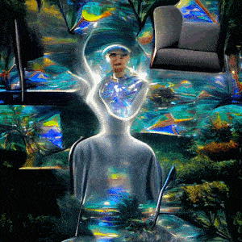
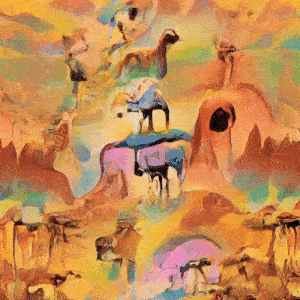

The Endless Dream of Change

an excerpt from the video
The Endless Dream of Change (حِلْم التَّغْيِير الأَبَدِي; הַחֲלוֹם הָאֵינְסוֹפִי שֶׁל שִׁנּוּי) is an AI work of art. The 2-minute video is engineered in a unique style - using different AI techniques to alter, enhance, and control the output of each frame. The video is in sync with the sound, delivering a peculiar yet mesmerizing audio-visual experience traveling through the realm of “change” - change and evolution of one’s self, the society around them, and the world.
The idea to depict this journey started from an experience of self-introspection - through one’s feelings, emotions, and questions. Then it sparked. Expression, brainstorming, vision-boarding, blueprinting, and weeks of creative coding using GANs (Generative Artificial Networks) led to this final result.
Audio: Jiddu Krishnamurti interview, Australia, 1970 | El Intro - Zenobia زنّوبيا

a frame from a video of the artist, used to generate some frames in the artwork (video taken by Ahmed Sadkhan)

an excerpt showing a transition of scenes in the artwork

an excerpt showing an AI diffusion in a scene in the artwork

an excerpt showing an AI extrapolation of scenes in the artwork